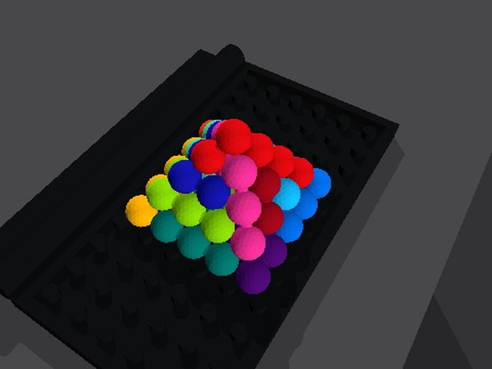

Reconstruct the scene. Execute a skill graph. Refine from physical trials.
01 / RoboSimStudio
From demonstration to simulation.
Drag the divider to compare the real puzzle and the reconstructed scene.


Scene + task specification + contact physics. Reconstructed geometry, friction, and release dynamics make physical rehearsal possible. RSS examples
02 / Graph-as-Policy
Watch the graph execute.
One timeline for the video and graph. Select a piece or node to jump.
Typed skill graph. RGB + robot joints + public CAD → perception, grasping, transport, and placement. Independent checkpoints verify progress. GaP skill
Loading the recorded execution and its graph.
Policy graph
Loading03 / Self-refinement
From each trial to a better skill.
Observe → diagnose → refine → rehearse. Keep the improvement, then connect the skills.
04 / Generalization
The same skills, different starts.
Changed observations produce new grasps and motion plans.